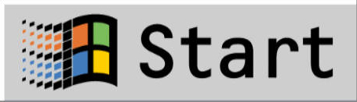

🖥️
My Computer
🗑️
Recycle Bin
📝
Notepad
💣
Minesweeper
🌐
Internet
Explorer
🖥️
My Computer
_
□
✕
File
Edit
View
Help
💾
3½ Floppy (A:)
💿
Local Disk (C:)
📀
CD-ROM (D:)
🖨️
Printers
🕹️
Control Panel
🌐
Network
Neighborhood
6 object(s)
📝
Untitled - Notepad
_
□
✕
File
Edit
Search
Help
Welcome to Windows 95! Type something here...
🗑️
Recycle Bin
_
□
✕
File
Edit
View
Help
Recycle Bin is empty.
0 object(s)
💣
Minesweeper
_
□
✕
Game
Help
010
🙂
000
🌐
Microsoft Internet Explorer
_
□
✕
File
Edit
View
Go
Favorites
Help
◀ Back
▶ Forward
✖ Stop
↻ Refresh
🏠 Home
⭐ Favorites
Address:
🌐
Microsoft Internet Explorer
The Internet starts here.
You are not connected to the Internet.
Done
Windows 95
📁
Programs
▶
🌐
Internet Explorer
📝
Notepad
💣
Minesweeper
📄
Documents
▶
📄
No recent documents
⚙️
Settings
▶
🕹️
Control Panel
🖨️
Printers
📊
Taskbar
🔍
Find
▶
❓
Help
🏃
Run...
🔌
Shut Down...
🔌
Shut Down Windows
🔌
What do you want the computer to do?
Shut down the computer
Restart the computer
Restart the computer in MS-DOS mode
OK
Cancel
Help

12:00 PM